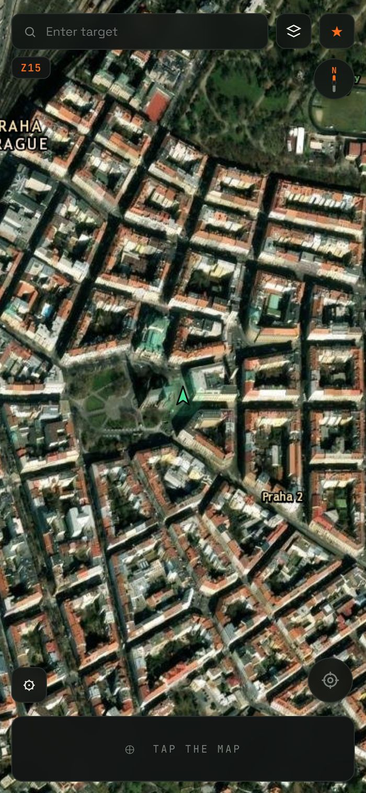
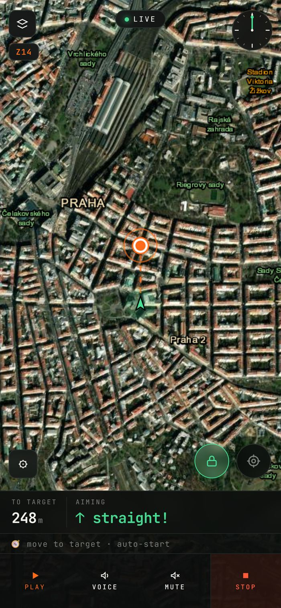
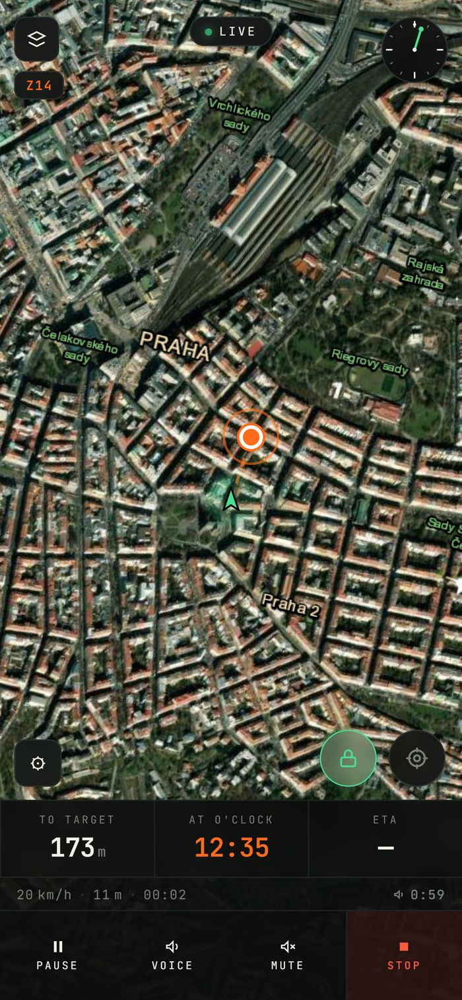
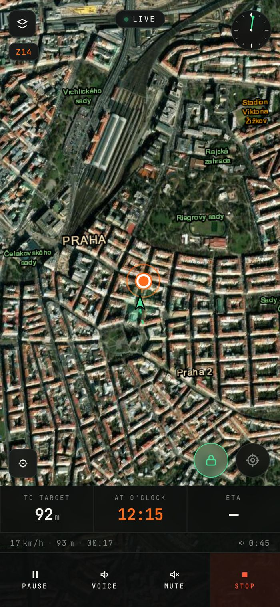
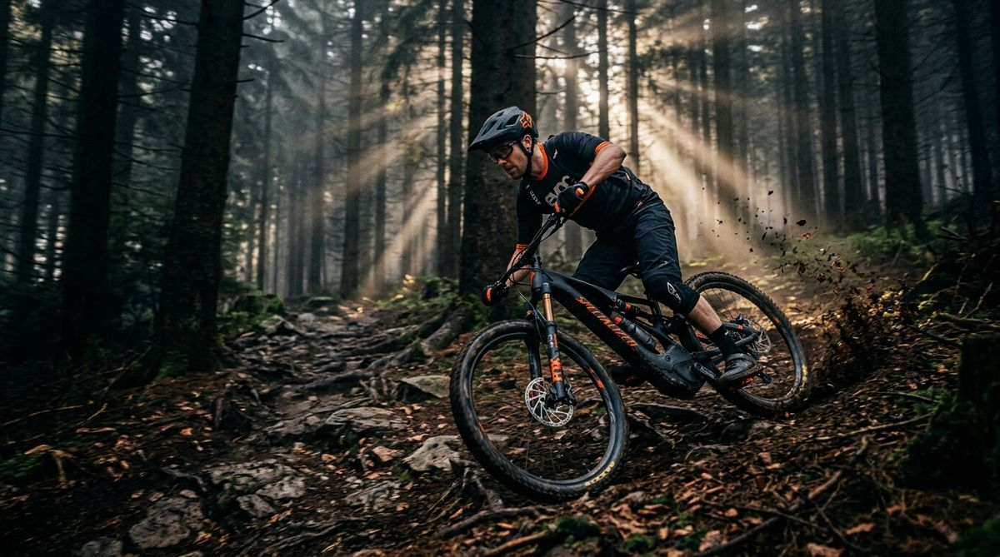
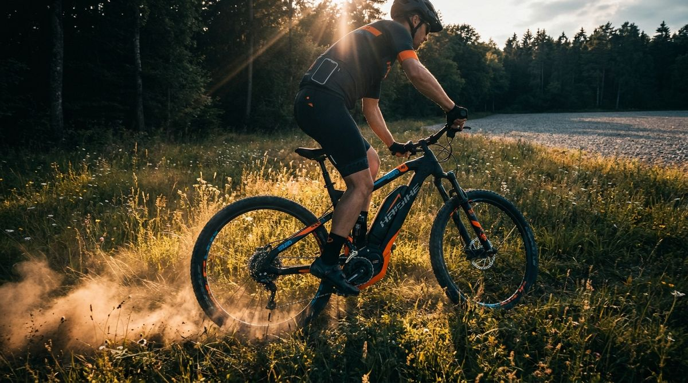

Classic navigation reads you turns and owns your route. Vector does the opposite: it tells you where the target is — clock-style, like a wingman — and lets you choose the way. Side streets, forest cut-throughs, gravel, stairs. Exploration stays yours.
Tap the map or search. Cache the map area if you’re going off-grid.
Aim: rotate until you hear “target ahead” — then push off. The screen can stay off for the whole ride.
The voice keeps you pointed right: bearing, distance, ETA — and a heads-up when you turn away.
Or turn it around: drop the target on the spot you started from — the car, the camp, the hut — and just wander. Vector keeps telling you how far you have drifted and which way leads back. Handy in the forest, on fishing trips, anywhere it is easy to lose your bearings.





